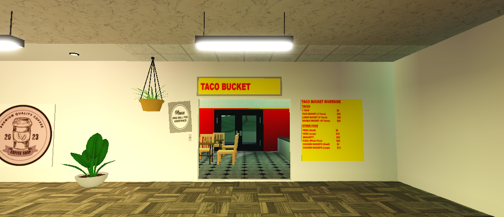
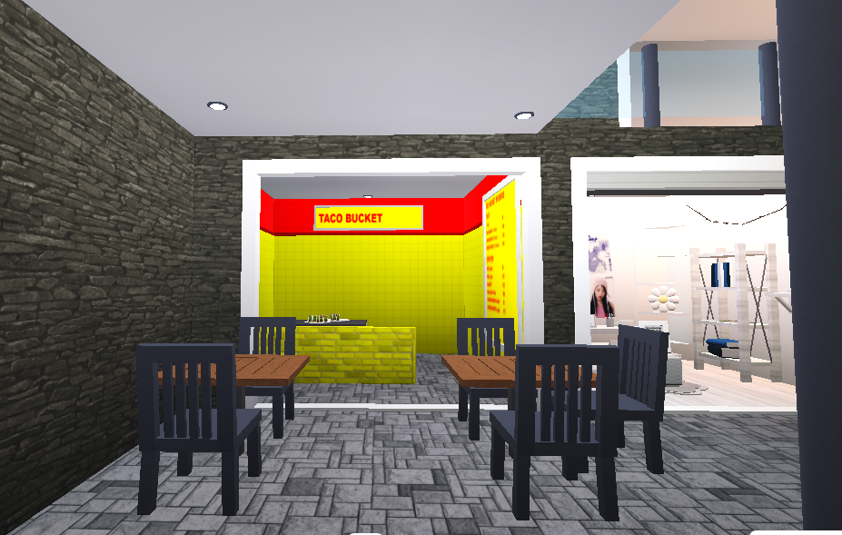

EVERY TACO BUCKET LOCATION IN ROBLOX
TacoBucket's Roblox locations are built and mostly managed by Brub. Typically seen inside of malls and shopping centers, but occasionally it's own game
Want a list that shows more than just roblox? Check it out here!

Kai Island
Main game: Twizel Town
Game link: Twizel Town, Roblox
Established: 2023
The first TacoBucket in Roblox. Built in Kai Island of Twizel Town during the island's development. It was located near the city port and was an attractive stopover among hungry tourists and was connected to the main island via the P1 BRT Line
Central City Mall
Main game: City Central [V2], Roblox
Established: July 2025
This TacoBucket is located in the City Central Mall. A massive 6 storey shopping center built by Ezcah5. CCM is the largest building to ever have a TacoBucket!

Pearlstone Center
Main game: Pearlstone Center
Established: N/A
This TacoBucket is planned to open in the food court of the Pearlstone Center. A 4 storey shopping center built by Brub that will house various stores and other games that he made.
Restaurant Tycoon 3
Main game: Restaurant Tycoon 3, Roblox
Established: August 2025
TacoBucket opens a 0.8 star restaurant in Restaurant Tycoon 3. Unfortunatley however it isn't the most reputable restaurant of the bunch. It recieved a low star rating due to numerous complaints regarding staffing, quality of food, and hygiene practices. Despite this it continues to serve dozens of NPC customers daily
BLOXBURG LOCATIONS

PineView Mall
Main game: Welcome to Bloxburg
Game link: Welcome to Bloxburg, Roblox
Established: 2024
The first branch in Bloxburg nestled in the PineView Mall. It included a modified menu that was compatible with bloxburg's food. Unfortunatley, PineView Mall officially closed down due to brankrupcy, lack of customers, and structual issues. TacoBucket reopens in the same location as a standalone restaurant

Brubalo Plaza
Main game: Welcome to Bloxburg
Game link: Welcome to Bloxburg, Roblox
Established: 2024
This TacoBucket is located in the brubalo plaza, a multi-use hotel building with a shopping space on the ground floor. It was primarily visited by the fellow residents and hotel goers of the plaza. Unfortunatley however, Brubalo Plaza faced a similar fate of PineView mall due to a lack of maintenance and modernization. The hotel quickly grew out of fashion, stores relocated, and customer counts declined. In 2024 the Brubalo Plaza has shuttered it's doors, leaving TacoBucket the only remaining tenant in the building. TacoBucket relocated from the shopping space to the hotel's former pool room in front of the property. TacoBucket remains open, still tethered to the now abandoned hotel.

Cobblestone Mall
Main game: Welcome to Bloxburg
Game link: Welcome to Bloxburg, Roblox
Established: 2025
This TacoBucket was located in the Cobblestone Mall in late 2024, situated in the center of Laguna City. It was the smallest TacoBucket location yet, measuring a mere 6x4 metres in size. Due to a lack of sales, it has relocated to a neighbouring commercial building that has more space and foot traffic. However as TacoBucket aims towards more games other than Bloxburg, this location is in risk of closing altogether.

Brublandia Grand Mall
Main game: Welcome to Bloxburg
Game link: Welcome to Bloxburg, Roblox
Established: 2025
This TacoBucket is located in the food court of the Brublandia Grand Mall, a massive 3 storey shopping mall in Bloxburg. This is the most succesful bloxburg branch today. As previous Bloxburg locations get phased out such as PineView, Brubalo Plaza, and Cobblestone mall. This will soon become the main TacoBucket to operate in bloxburg